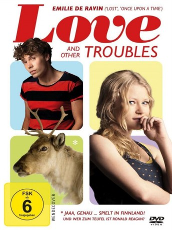

#8859 Love and Other Troubles
 
 IMDB-Wertung: 5.7 / 10
IMDB-Wertung: 5.7 / 10  Metascore: 0
Metascore: 0 
Im Alter von 25 Jahren hat Ville (Jussi Nikkilä) seine wilde Zeit bereits hinter sich gelassen. Der ehemalige Kinderstar fristet in einem kleinen, finnischen Dorf ein ruhiges Dasein als Gitarrenlehrer. Sein Vater Taisto (Ville Virtanen) hingegen ist das absolute Gegenteil: Extrovertiert und ziemlich abgewrackt steht der Ex-Rockstar plötzlich vor der Haustür seines Sohnemanns und bittet um eine vorübergehende Behausung. Ein paar Tage oder ein paar Wochen, was macht das schon? Der Chaot schafft es immer wieder, seinem Sprössling das Leben zur Hölle zu machen. Eines Nachts bringt der Lebemann eine neue Eroberung nach Hause, die Villes Leben völlig auf den Kopf stellt: Sara (Emilie de Ravin) ist ebenfalls 25, amerikanische Studentin, frech, offenherzig und absolut umwerfend. Zwischen Vater und Sohn entbrennt ein Kampf um die Gunst ihrer Angebeteten und Ville stellt überrascht fest, dass in ihm mehr von seinem alten Herrn schlummert, als er sich eingestehen will …
Jahr: 2012
Dauer: 87 Minuten
FSK: 6
Land: Finnland Studio: Lighthouse Home EntertainmentTonspuren:
Untertitel: Deutsch,
Auflösung: 1080p (1920x808) Größe: 3676 MB
Genre: Komödie, Liebe
Regisseur: Samuli Valkama
Drehbuch: Katri Manninen
Soundtrack: Moritz Denis, Eike Hosenfeld, Tim Stanzel
Darsteller:
 Emilie de Ravin als
Emilie de Ravin als - Jussi Nikkilä als
 Ville Virtanen als
Ville Virtanen als - Jessica Grabowsky als
- Jani Volanen als
- Tiina Lymi als
 Tommi Korpela als
Tommi Korpela als - Jussi Lampi als
- Janne Reinikainen als
- Väinö Lehtinen als
- Jaakko Paavilainen als
- Jari Pehkonen als
- Mika Kujala als
- Pertti Räbinä als
- Jari Hytönen als
- Jarmo Altis als
- Antti Laaksovirta als
- Seppo Hellman als
- Merita Seppälä als
- Sami Olander als
- Viivi Vuorinen als
- Maritta Hytönen als
- Riitta Rantanen als
- Saija Välikangas als
- Veli-Matti Henttonen als
- Birgit Leinonen als
- Jukka Tuominen als
- Aarne Kallioranta als
- Angie Hernandez als
- Lukas Rantanen als
- Ilona Saari als
- Inkeri Tuominen als
- Sirkka-Liisa Klami als
- Tuula Kalliovaara als
- Kirsi Vuorinen als
- Ossi Korhonen als
- Krista Laakso als
- Mira Hellman als
- Jyrki Välilä als
- Carita Lammervo als
- Leila Rantanen-Järvelä als
- Kristina Laaksonen als
- Petra Juusti als
- Mervi Korhonen als
- Camilla Laaksonen als
- Sanna Rantapere als
- Kirsi Mannonen als
- Tuija Hassinen-Laine als
- Taru Välttilä als
- Olla-Riitta Aarikka als
Datei: X:\2012(G-M)\Love and Other Troubles (2012, FSK6, 1920x808).mkv seit 03.05.2018
Festplatte: HD 2012(A-M)
 Es gibt insgesamt 112 Filme in der Gruppe '2012(G-M)'
Es gibt insgesamt 112 Filme in der Gruppe '2012(G-M)'